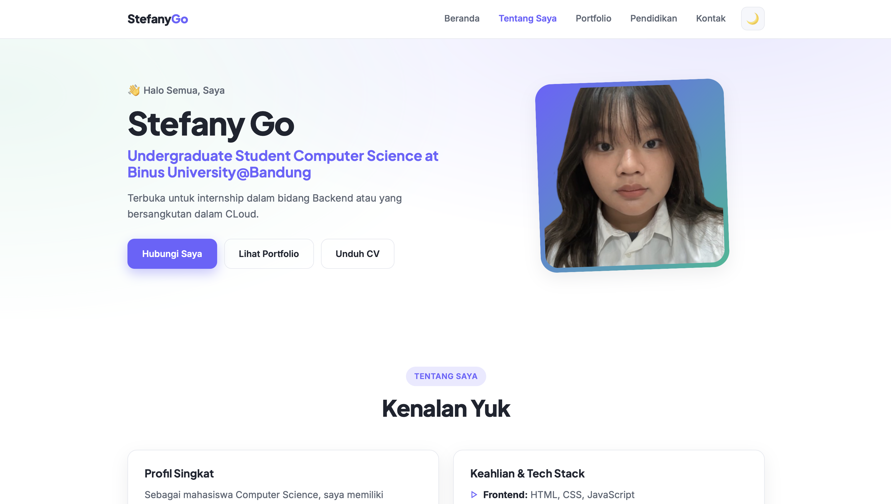
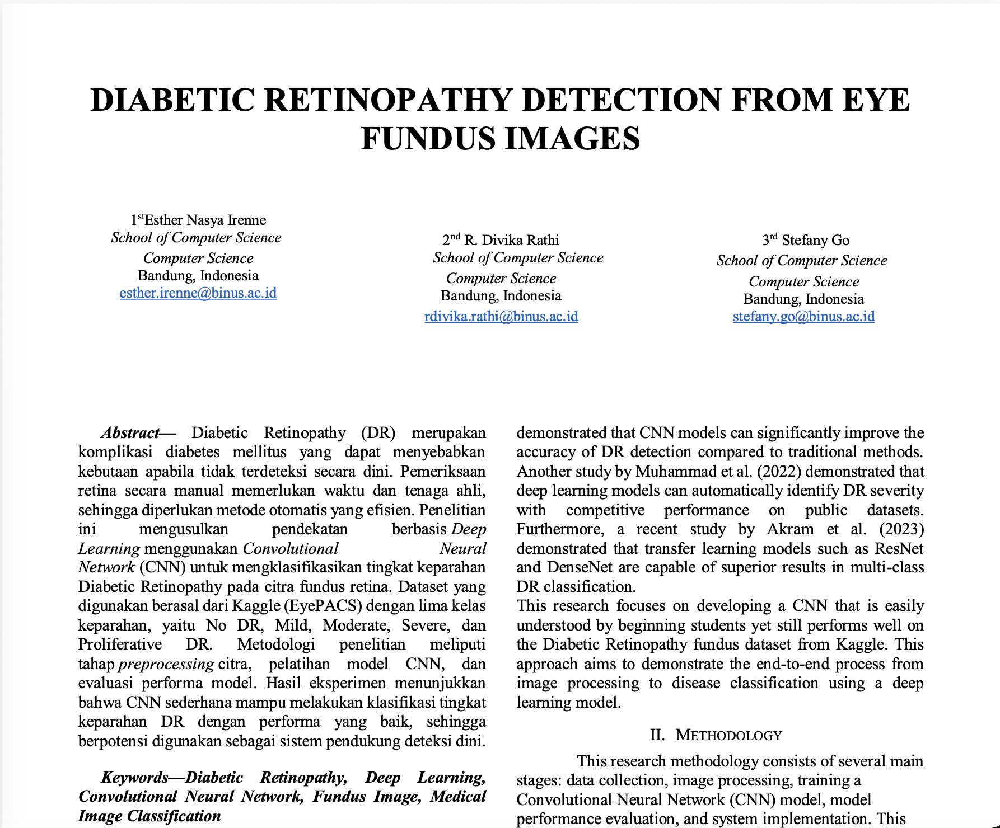
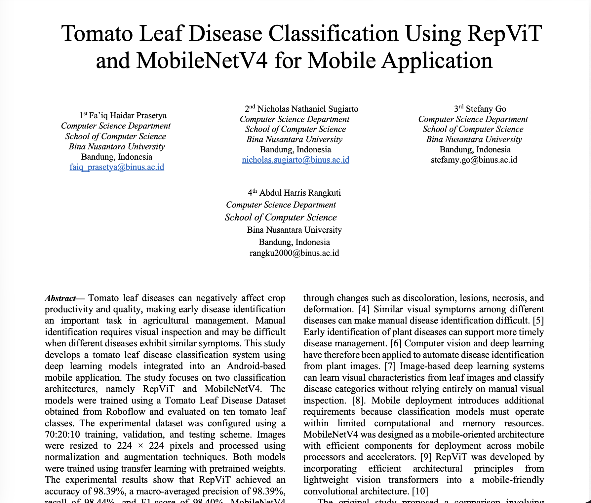
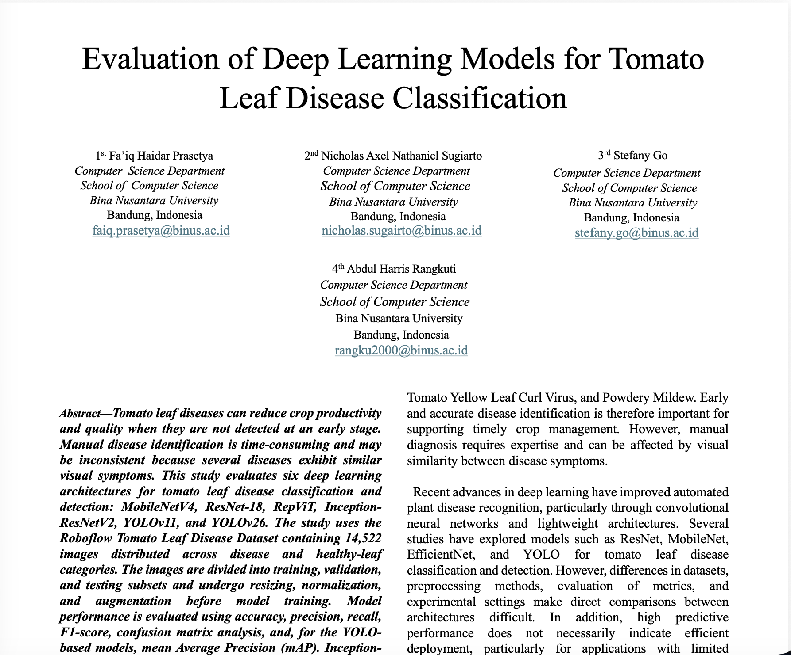
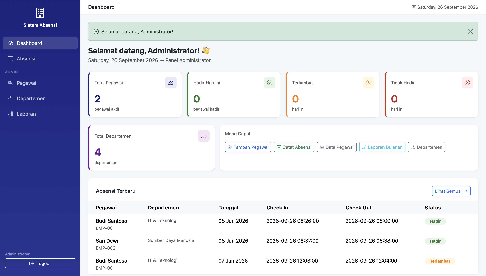

👋 Halo Semua, Saya
Terbuka untuk internship dalam bidang Backend atau yang bersangkutan dalam CLoud.
Sebagai mahasiswa Computer Science, saya memiliki ketertarikan besar pada bidang Back-End Development dan Data Engineering, khususnya dalam merancang sistem yang efisien dan mengelola data secara optimal. Saya terbiasa berpikir analitis dan sistematis dalam menyelesaikan masalah teknis, memiliki kemampuan komunikasi yang baik untuk berkolaborasi lintas tim (termasuk dengan front-end developer dan stakeholder non-teknis), serta selalu berusaha untuk terus belajar dan beradaptasi dengan perkembangan teknologi terbaru di industri
Berikut beberapa proyek yang pernah saya kembangkan.


Penelitian ini mengembangkan model CNN sederhana untuk mengklasifikasikan lima tingkat keparahan Diabetic Retinopathy dari citra fundus retina menggunakan dataset Kaggle EyePACS, dengan hasil akurasi 75% yang menunjukkan potensi sebagai alat bantu skrining dini meski masih lemah pada kelas minoritas.
📄 Unduh Paper →
Penelitian ini membandingkan performa RepViT dan MobileNetV4 untuk klasifikasi penyakit daun tomat yang diintegrasikan ke aplikasi Android, di mana RepViT unggul dalam akurasi (98,39%) sementara MobileNetV4 lebih efisien secara komputasi dan cocok untuk perangkat mobile.
📄 Unduh Paper →
Penelitian ini mengevaluasi enam arsitektur deep learning (MobileNetV4, ResNet-18, RepViT, Inception-ResNetV2, YOLOv11, YOLOv26) untuk klasifikasi dan deteksi penyakit daun tomat, dengan Inception-ResNetV2 mencapai akurasi tertinggi (99,04%) sementara model lain menawarkan keunggulan pada efisiensi atau lokalisasi penyakit.
📄 Unduh Paper →
Aplikasi web berbasis Laravel yang terhubung ke database MySQL untuk operasi CRUD. Dijalankan secara lokal.
Lihat Kode →Binus University@Bandung
IPK 3.33.
Jurusan IPA
Selalu masuk dalam peringkat 10, Mengikuti lomba matematika, Mengikuti kegiatan OSIS selama 2 Periode, dan menjadi bendahara yearbook dan graduation
Saya terbuka untuk kolaborasi, diskusi proyek, atau peluang magang.